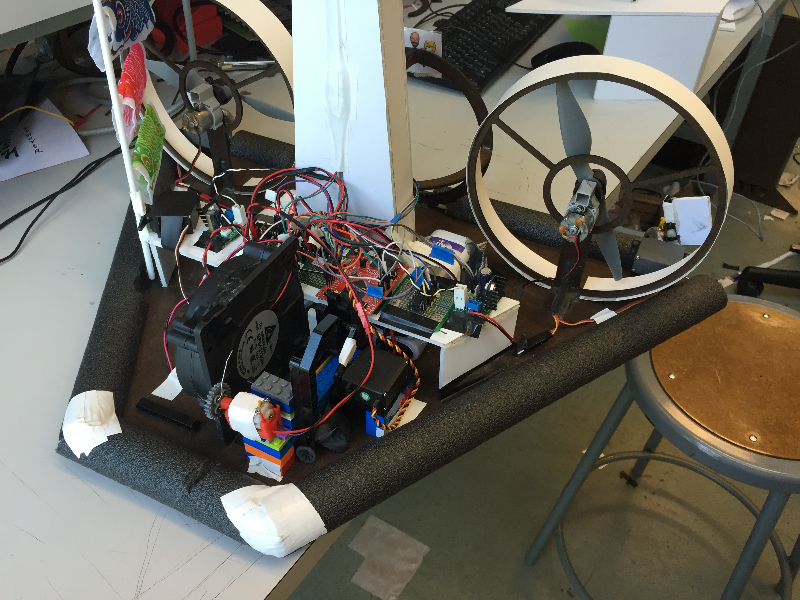

Le Hover
Remote controlled hoverbot for ME 218C
Remember that elementary school birthday game where you would tie a balloon to your ankle and run around trying to stomp on everyone else's balloon while defending yours? Well for ME 218C our task was to play that game but with remote controlled hovercrafts. We also need a them for our hovercraft and controller so my team of Hnin Ookhin, John Schoech, Garrett Hara and I decided to focus our project around the best thing in the world: food. We made our controller a frying pan that moves the hovercraft in the direction you tilt it and deploys the balloon popping mechanism when you flip the egg (wonderfully crafted by Hnin). Through our prototyping and testing we learned that just actuating the propellers wasn't enough to steer so we implemented a system to drop fishing weights coated in hot glue off the sides of the hovercraft. This worked quite well and we ended up with the most maneuverable hovercraft in the class. Completed spring of 2015.
